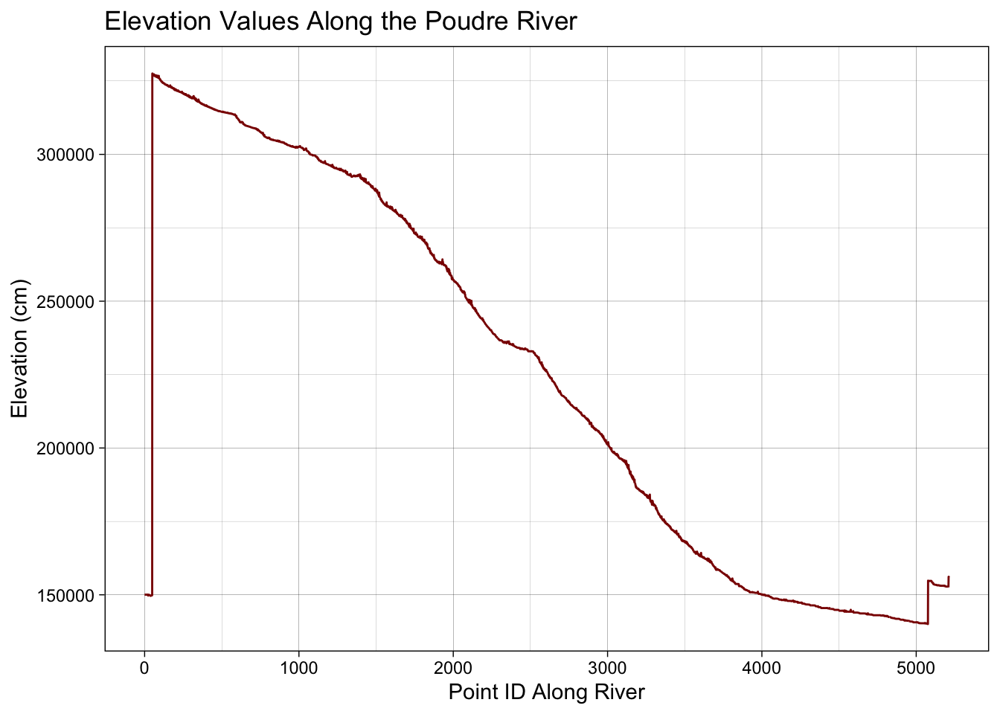

Filter the osm_lines object to only include the Cache la Poudre River and merge the lines into a single line object with st_union(). Be sure to convert the object to a sf object with st_as_sf() when done.
library(dplyr)
Attaching package: 'dplyr'
The following objects are masked from 'package:terra':
intersect, union
The following objects are masked from 'package:stats':
filter, lag
The following objects are masked from 'package:base':
intersect, setdiff, setequal, union
Divide the length of the full river (step 3) by this straight line distance to get the sinuosity. Report the value and what it means. Does this value make sense with respect to the complete Poudre River?
#The sinuosity of the Poudre is 17.07305, which means that it is a river that meanders a lot and has many curves. This makes sense as the Poudre River flows through a variety of landscapes and travels over terrain that is varied and inconsistent, resulting in curves.
Compute Slope
The slope of a river is the change in elevation between the inlet and outlet divided by the length of the river. Compute this value and report it. Remember the units of the elevation (cm) and of your length!
#The slope is 0.0272 cm for every meter of the river.
Map Profile: 2 ways
Last, we want to visualize the river profile.
Use ggplot() to create a line plot of the elevation values along the river. Be sure to use the ID column as the x-axis and the dem column as the y-axis. Add nice lables and themese to your chart.
library(ggplot2)ggplot(poudre_pts_elev) +aes(x = ID, y = elev) +geom_line(color ="darkred") +labs(title ="Elevation Values Along the Poudre River",x ="Point ID Along River",y ="Elevation (cm)" ) +theme_linedraw()

Use ggplot() to plot the spatial mpa of the river profile. Use the geom_sf() function to plot the river and color it by elevation. Be sure to use a nice color scale and theme.
poudre_sf <-st_as_sf(poudre_pts_elev)ggplot(poudre_sf) +geom_sf(aes(color = elev)) +scale_color_viridis_c(option ="C", name ="Elevation (cm)") +labs(title ="Cache la Poudre River Spatial Profile") +theme_linedraw()